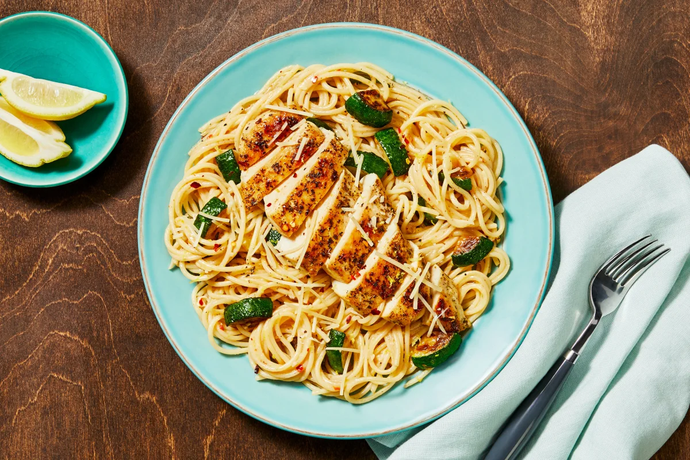

Italian Chicken over Lemony Spaghetti

Description
A lively creamy lemon sauce topped chicken with al dente spaghetti. Tossed with softened zucchini and topped with Parmesan.
Materials
- Large pot
- Zester
- Strainer
- Large pan
- Paper towels
- Kosher salt
- Black pepper
- Olive oil (1 tsp)
- Cooking oil (1 tsp)
- Butter (1 tbsp)
Ingredients
**Individual portion sizing
- 5 oz Chicken Breast
- 3 oz Spaghetti
- 1 clove Garlic
- 1 Lemon
- 1/2 Zucchini
- 2 tbsp Sour Cream
- 2 oz Chicken Stock Concentrate
- 1/8 cup Parmesan Cheese
- 1/2 tsp Chili Flakes
- 1/2 tbsp Italian Seasoning
Steps
- PREP
- Bring a large pot of salted water to a boil. Wash and dry produce.
- Trim and quarter zucchini lengthwise; cut crosswise into 1/2-inch-thick pieces. Peel and mince garlic. Zest and quarter the lemon.
- COOK PASTA
- Once water is boiling, add spaghetti to pot. Cook, stirring occasionally, until al dente. 9-11 minutes.
- Reserve 1/2 cup pasta cooking water then drain (Keep empty pot handy for step 5).
- COOK ZUCCHINI
- While pasta cooks, heat a drizzle of olive oil in a large, preferably nonstick, pan over medium-high heat. Add zucchini; cook, stirring occasionally, until browned and softened, 4-6 minutes. Season with salt and pepper.
- Turn off heat; transfer to a plate. Wipe out pan.
- COOK CHICKEN
- Meanwhile, pat chicken dry with paper towels and season all over with Italian Seasoning, salt, and pepper.
- Once zucchini is done, heat a large drizzle of oil in the same pan over medium-high heat. Add chicken and cook until browned and cooked through 3-5 minutes per side.
- Turn off heat; transfer to cutting board to rest.
- Once cool enough to handle, slice chicken crosswise.
- MAKE SAUCE
- Heat a drizzle of olive oil in the pot used for spaghetti over medium-high heat. Add garlic, half the lemon zest, and a pinch of chili flakes. Cook, stirring until fragrant. 20-30 seconds.
- Stir in 3/4 reserved pasta cooking water, stock concentrate, and juice from two lemon wedges. Simmer until thickened. 1-2 minutes. Turn off heat.
- FINISH & SERVE
- Add drained spaghetti, zucchini, sour cream, and 1 TBSP butter to pot with sauce; toss to coat.
- Add half the Parmesan and season with salt and pepper. TIP: If needed, stir in more reserved pasta cooking water a splash at a time until spaghetti is coated in a creamy sauce.
- Plate pasta. Top with Chicken, remaining Parmesan, remaining lemon zest and a pinch of chili flakes if desired. Serve with any remaining lemon wedges on the side.
Enjoy!
Home